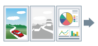
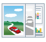
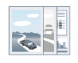

Переключение между цветной печатью и печатью в оттенках серого
Можно переключаться между цветной печатью и печатью в оттенках серого (в черно-белом режиме). Можно также настроить принтер, чтобы он автоматически распознавал каждую страницу - цветная или черно-белая - и переключался в соответствующий режим.
|

|

|

|
|
Печать данных
|
Цветная печать
|
Оттенки серого
|
1.
Откройте вкладку [Основные настройки] или [Качество].
2.
Выберите настройку из списка [Цветной режим].
Если было выбрано автоматическое распознавание цвета/оттенков серого для каждой страницы: выберите [Авто [Цвет/Ч/Б]].
Поддерживаемые принтеры
Цветные принтеры